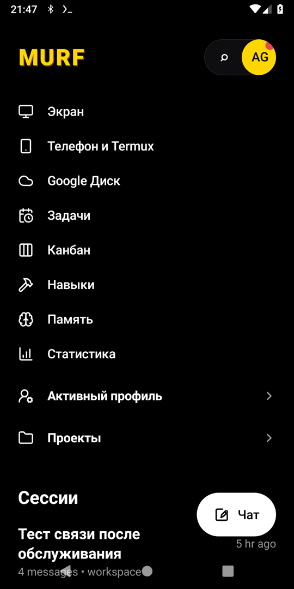
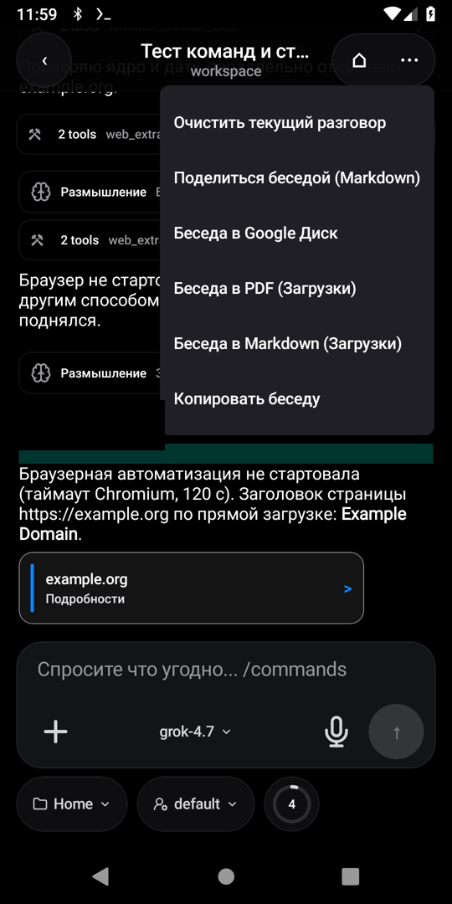
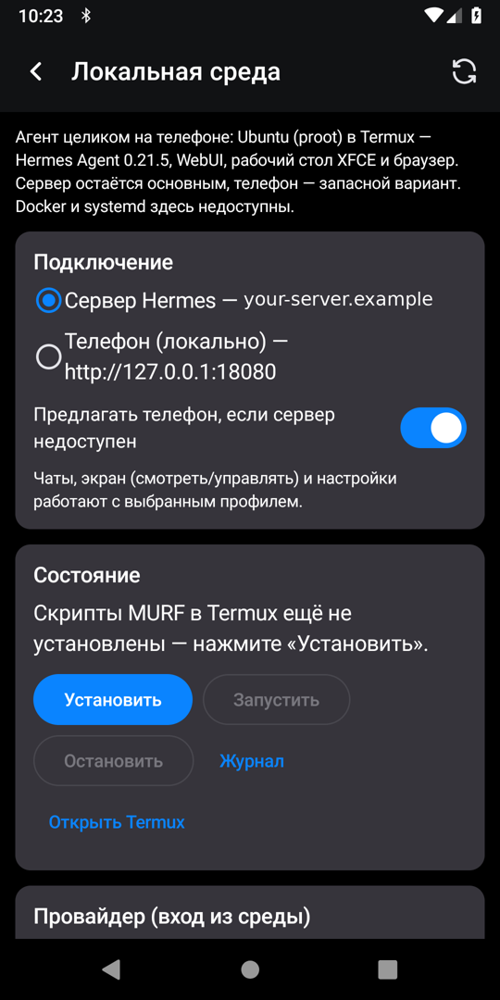
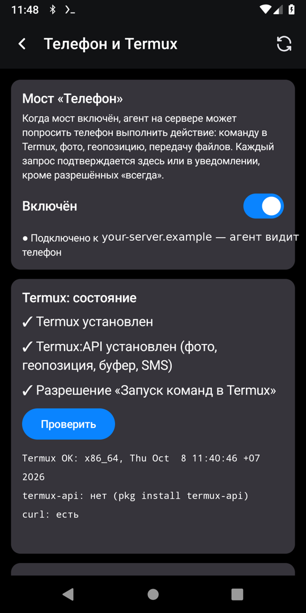
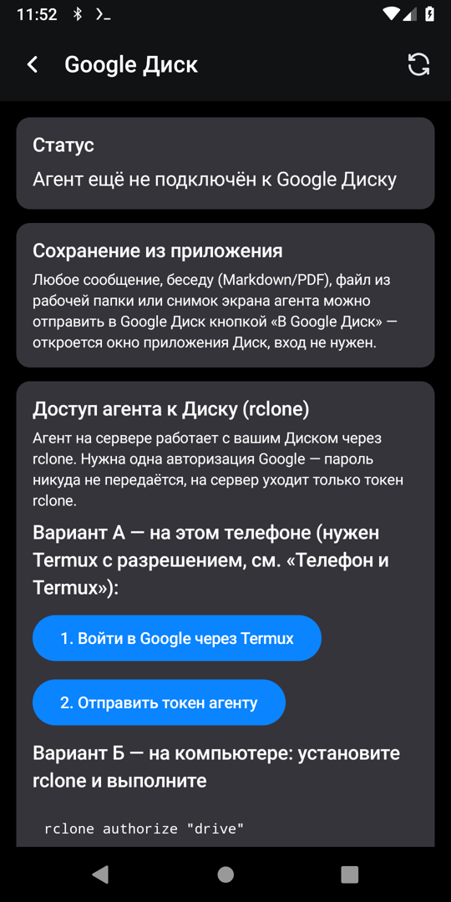

MURF — Android app for your own AI agent
MURF is an open-source Android client for Hermes Agent: chat with your AI agent, watch and control its live desktop, let it use your phone through Termux — or run the whole agent on the phone in local Ubuntu. A self-hosted alternative to cloud agent apps like Manus.





Screenshots show the Russian UI; the app is fully available in English.
Features
Agent chat
Streaming answers, tool steps, reasoning, subagents and approvals for risky actions.Live agent desktop
noVNC screen of the agent's computer: view-only mode enforced server-side, or full control with zoom and a key bar.Phone bridge
The agent asks your phone to run Termux commands, take photos, share files or location — each action confirmed.Local mode
Hermes Agent + WebUI + XFCE desktop in Ubuntu 24.04 (proot) on the phone, with built-in diagnostics.Self-hosted
Your server, your model provider. Example nginx and systemd configs included.Everything from Hermex
Sessions, projects, tasks, kanban, skills, memory, stats, multiple servers and profiles; export to Markdown/PDF and Google Drive.Like Codex or Claude desktop — but on your phone, with your own agent
Like OpenAI's Codex app and Anthropic's Claude Desktop, MURF is a client for an AI agent that works on a computer, shows its steps and tool calls, asks for approval and handles files. The difference: MURF is an Android app for the open-source Hermes Agent on your own Ubuntu server (or on the phone itself), with a live view of the agent's own desktop, a Termux phone bridge and any model provider. Full comparison.
MURF is not affiliated with or endorsed by OpenAI or Anthropic. Codex, ChatGPT and Claude are trademarks of their respective owners.